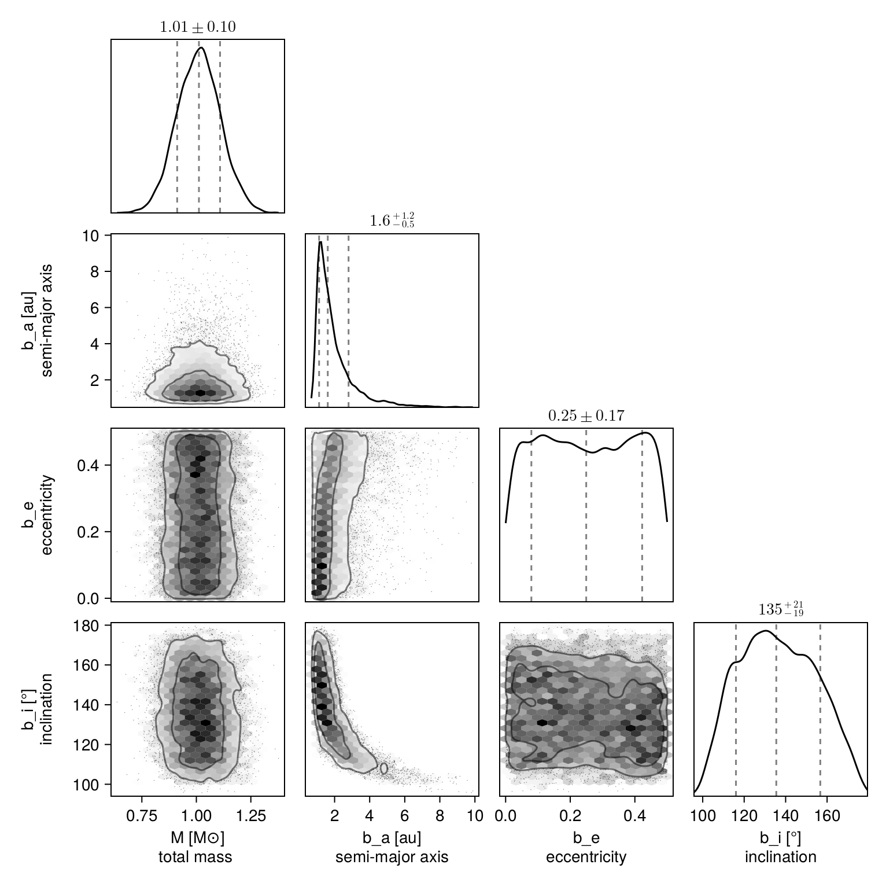
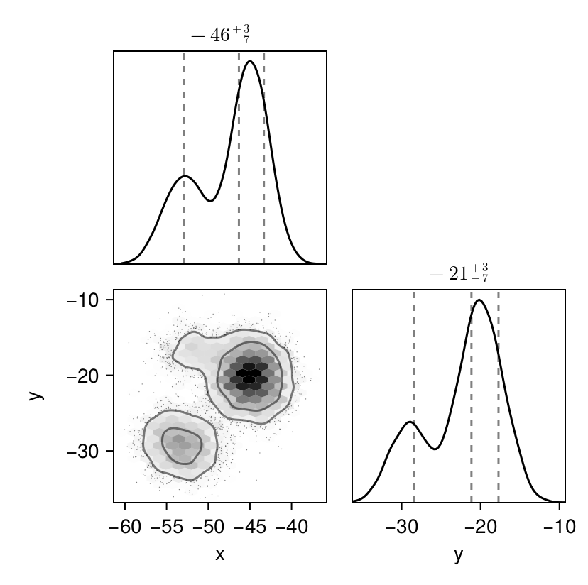
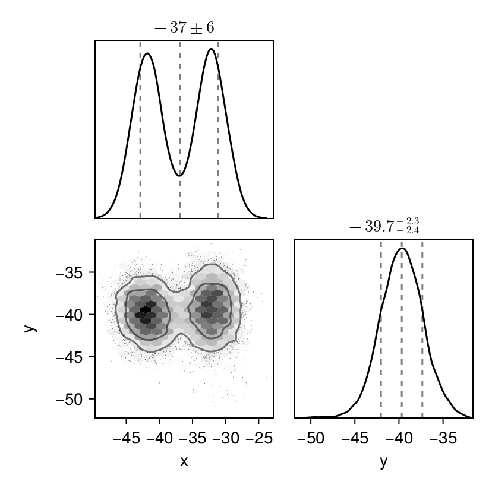

Fitting Likelihood Maps
There are circumstances where you might have a 2D map of planet likelihood vs. position in the plane of the sky ($\Delta$ R.A. and Dec.). These could originate from:
- cleaned interferometer data
- some kind of spectroscopic cube model fitting to detect planets
- some other imaginative modelling process I haven't thought of!
You can feed such 2D likelihood maps in to Octofitter. Simply pass in a list of maps and a platescale mapping the pixel size to a separation in milliarcseconds. You can of course also mix these likelihood maps with relative astrometry, radial velocity, proper motion, images, etc.
The likelihood maps must cover the full field of view. So for example, if you have a likelihood map covering a narrow field of view of $\pm 20 \; \mathrm{mas}$ from a fiber fed interferometer placed at a separation of $\pm 150 \; \mathrm{mas}$, you should pad out your likelihood map so that it covers $\pm 170 \; \mathrm{mas}$ in both directions. You can simply pad the map with NaN of -Inf.
For simple models of interferometer data, OctofitterInterferometry.jl can already handle fitting point sources directly to visibilities.
using Octofitter
using Distributions
using OctofitterImages
using Pigeons
using AstroImages┌ Warning: Module Octofitter with build ID ffffffff-ffff-ffff-0000-004896e9cd43 is missing from the cache.
│ This may mean Octofitter [daf3887e-d01a-44a1-9d7e-98f15c5d69c9] does not support precompilation but is imported by a module that does.
└ @ Base loading.jl:1942
┌ Warning: Module Octofitter with build ID ffffffff-ffff-ffff-0000-004896e9cd43 is missing from the cache.
│ This may mean Octofitter [daf3887e-d01a-44a1-9d7e-98f15c5d69c9] does not support precompilation but is imported by a module that does.
└ @ Base loading.jl:1942Typically one would load your likelihood maps from eg. FITS files like so:
images = AstroImages.recenter(load("image-example-1.fits",1))If you're using a FITS file, make sure to store your data in 64-bit floating point format.
For this demonstration, however, we will construct two synthetic likelihood maps using a template orbit. We will create three peaks in two epochs.
orbit_template = orbit(
a = 1.0,
e = 0.1,
i = 0.0,
ω = 0.0,
Ω = 0.5,
plx = 50.0,
M = 1
)
epochs = [
mjd("2024-01-30"),
mjd("2024-02-29"),
]
## Create simulated data with three likelihood peaks at both epochs
x1,y1 = raoff(orbit_template,epochs[1]), decoff(orbit_template,epochs[1])
# The three peaks in our likelihood map
d1 = MvNormal([x1, y1], [
5.0 0.2
0.2 8.0
])
d2 = MvNormal([x1+8.0,y1+4], [
5.0 0.6
0.6 5.0
])
d3 = MvNormal([x1+9.0, y1-10.0], [
6.0 0.6
0.6 6.0
])
d = MixtureModel([d1, d2, d3], [0.5, 0.3, 0.2])
# For calculations we save the full map in log likelihood
llmap_epoch1 = broadcast(-500:1:500, (-500:1:500)') do x, y
logpdf(d, [x, y])
end
# For display we show just a subset in linear units:
lm1 = broadcast(x1 .+ (-50:50), y1 .+ (-50:1:50)') do x, y
pdf(d, [x, y])
end
imview(lm1,clims=extrema)![]()
That was the first epoch. We now generate data for the second epoch:
x2,y2 = raoff(orbit_template,epochs[2]), decoff(orbit_template,epochs[2])
# The three peaks in our likelihood map
d1 = MvNormal([x2, y2], [
5.0 0.2
0.2 8.0
])
d2 = MvNormal([x2+10.0,y2], [
5.0 0.6
0.6 5.0
])
d3 = MvNormal([x2-4.0, y2-10.0], [
6.0 0.6
0.6 6.0
])
d = MixtureModel([d1, d2, d3], [0.5, 0.3, 0.2])
# For calculations we save the full map in log likelihood
llmap_epoch2 = broadcast(-500:1:500, (-500:1:500)') do x, y
logpdf(d, [x, y])
end
# For display we show just a subset in linear units:
lm2 = broadcast(x2 .+ (-50:50), y2 .+ (-50:1:50)') do x, y
pdf(d, [x, y])
end
imview(lm2,clims=extrema)![]()
Okay, we have our synthetic data. We now set up a LogLikelihoodMap object to contain our matrices of log likelihood values:
loglikemap = LogLikelihoodMap(
(;
epoch=epochs[1],
map=AstroImages.recenter(AstroImage(llmap_epoch1)),
platescale=1.0 # milliarcseconds/pixel of the map
),
(;
epoch=epochs[2],
map=AstroImages.recenter(AstroImage(llmap_epoch2)),
platescale=1.0 # milliarcseconds/pixel of the map
)
);OctofitterImages.LogLikelihoodMap Table with 4 columns and 2 rows:
epoch map platescale mapinterp
┌────────────────────────────────────────────────────────────────────────────
1 │ 60339.0 [-40126.5 -40056.6 -39986… 1.0 1001×1001 extrapolate(int…
2 │ 60369.0 [-36452.9 -36386.2 -36319… 1.0 1001×1001 extrapolate(int…The likelihood maps will be interpolated using a simple bi-linear interpolation.
We now create a one-planet model and run the fit using octofit_pigeons. This parallel-tempered sampling is recommended over the default Hamiltonian Monte Carlo sampler due to the multi-modal nature of the data.
@planet b Visual{KepOrbit} begin
a ~ Uniform(0, 10)
e ~ Uniform(0.0, 0.5)
i ~ Sine()
ω ~ UniformCircular()
Ω ~ UniformCircular()
θ ~ UniformCircular()
tp = θ_at_epoch_to_tperi(system,b,60339.0) # reference epoch for θ. Choose an MJD date near your data.
end loglikemap
@system Tutoria begin
M ~ truncated(Normal(1.0, 0.1), lower=0)
plx ~ truncated(Normal(50.0, 0.02), lower=0)
end b
model = Octofitter.LogDensityModel(Tutoria)
chain, pt = octofit_pigeons(model, n_rounds=13) # increase n_rounds until log(Z₁/Z₀) converges.
display(chain)─────────────────────────────────────────────────────────────────────────────────────────────────────────────
scans restarts Λ time(s) allc(B) log(Z₁/Z₀) min(α) mean(α) min(αₑ) mean(αₑ)
────────── ────────── ────────── ────────── ────────── ────────── ────────── ────────── ────────── ──────────
2 0 5 0.0163 2.91e+04 -576 1.5e-141 0.286 1 1
4 0 2.37 0.0148 3.58e+04 -707 0 0.661 1 1
8 0 2.47 0.0281 6.39e+04 -42.3 1.05e-18 0.647 1 1
16 0 4.92 0.0562 8.59e+04 -20.2 0.0018 0.298 1 1
32 0 4.83 0.11 1.62e+05 -18.7 0.137 0.311 1 1
64 0 5.39 0.22 2.72e+05 -21.6 0.0586 0.23 1 1
128 2 5.38 0.438 5.12e+05 -20.5 0.116 0.231 1 1
256 6 5.17 0.866 9.76e+05 -20 0.191 0.262 1 1
512 7 5.29 1.73 1.88e+06 -20.3 0.204 0.244 1 1
1.02e+03 18 5.22 3.48 3.69e+06 -20.7 0.208 0.255 1 1
2.05e+03 38 5.3 6.96 7.26e+06 -20.1 0.235 0.243 1 1
4.1e+03 88 5.27 13.9 1.45e+07 -20.3 0.236 0.247 1 1
8.19e+03 174 5.23 27.9 2.9e+07 -20.7 0.237 0.253 1 1
─────────────────────────────────────────────────────────────────────────────────────────────────────────────octofit_pigeons scales very well across multiple cores. Start julia with julia --threads=auto to make sure you have multiple threads available for sampling.
Display the results:
using Plots: Plots
octoplot(model, chain)
Corner plot:
using CairoMakie, PairPlots
octocorner(model,chain,small=true,)
And finally let's look at the posterior predictive distributions at both epochs:
els = Octofitter.construct_elements(chain,:b, :)
x = raoff.(els, loglikemap.table.epoch[1])
y = decoff.(els, loglikemap.table.epoch[1])
pairplot(
(;x,y)
)
x = raoff.(els, loglikemap.table.epoch[2])
y = decoff.(els, loglikemap.table.epoch[2])
pairplot(
(;x,y)
)